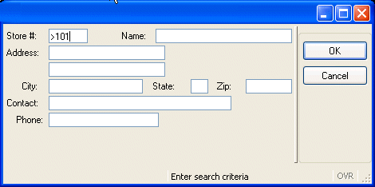

Summary:
This program implements query-by-example, using the CONSTRUCT statement to allow the user to enter search criteria in a form. The criteria is used to build an SQL SELECT statement which will retrieve rows from the customer database table. A SCROLL CURSOR is defined in the program, to allow the user to scroll back and forth between the rows of the result set. The SQLCA.SQLCODE is used to test the success of the SQL statements. Handling errors, and allowing the user to cancel the query, is illustrated.
Display on Windows platforms
Query-by-Example allows users to enter a value or a range of values for one or several form fields. Then your program looks up the database rows that satisfy the requirements. The BDL statement that makes this possible is CONSTRUCT.
A basic CONSTRUCT statement has the following format:
CONSTRUCT <variable-name> ON <column-list> FROM <field-list
This statement temporarily binds the specified form fields to database columns. It allows you to identify database columns for which the user can enter search criteria. Each field and CONSTRUCT corresponding column must be the same or compatible data types. You can use the BY NAME clause when the fields on the screen form have the same names as the corresponding columns in the ON clause. The user can query only the screen fields implied in the BY NAME clause.
CONSTRUCT BY NAME <variable-name> ON <column-list>
The runtime system converts the entered criteria into a Boolean SQL condition that can appear in the WHERE clause of a SELECT statement. The variable to hold the query condition can be defined as a STRING data type. Strings are a variable length, dynamically allocated character string data type, without a size limitation. The STRING variable can be concatenated, using the double pipe operator (||), with the text required to form a complete SQL SELECT statement. The LET statement can be used to assign a value to the variable. For example:
DEFINE where_clause, sqltext STRING
CONSTRUCT BY NAME where_clause ON customer.*
LET sql_text = "SELECT COUNT(*) FROM customer WHERE " || where_clause

Display on Windows Platform
In this example the user has entered the criteria > 101 in the store_num field. The where_clause would be generated as
"store_num > 101"
and the complete sql_text would be
"SELECT COUNT(*) FROM customer WHERE store_num > 101"
The STRING created in the example is not valid for execution. The PREPARE instruction sends the text of the string to the database server for parsing, validation, and to generate the execution plan. The scope of a prepared SQL statement is the module in which it is declared.
PREPARE cust_cnt_stmt FROM sql_text
A prepared SQL statement can be executed with the EXECUTE instruction.
EXECUTE cust_cnt_stmt INTO cust_cnt
Since the SQL statement will only return one row (containing the count) the INTO syntax of the EXECUTE instruction can be used to store the count in the local variable cust_cnt. (The function cust_select illustrates the use of database cursors with SQL SELECT statements.)
When a prepared statement is no longer needed, the FREE instruction will release the resources associated with the statement.
FREE cust_cnt_stmt
The language pre-defines some actions and associated names for common operations, such as accept or cancel, used during interactive dialogs with the user such as CONSTRUCT. You do not have to define these actions in the interactive instruction block, the runtime system interprets predefined actions. For example, when the accept action is caught, the dialog is validated.
You can define action views (such as buttons, toolbar icons, menu items) in your form using these pre-defined names; the corresponding action will automatically be attached to the view. If you do not define any action views for the actions, default buttons (such as OK/Cancel) for these actions will be displayed on the form as appropriate when interactive dialog statements are executed.
When the CONSTRUCT statement executes, buttons representing accept and cancel actions will be displayed by default, allowing the user to validate or cancel the interactive dialog statement. If the user selects Cancel, the INT_FLAG is automatically set to TRUE. Once INT_FLAG is set to TRUE, your program must re-set it to FALSE to detect a new cancellation. You typically set INT_FLAG to FALSE before you start a dialog instruction, and you test it just after (or in the AFTER CONSTRUCT / AFTER INPUT block) to detect if the dialog was canceled:
LET INT_FLAG = FALSE
CONSTRUCT BY NAME where_part
...
END CONSTRUCT
IF INT_FLAG = TRUE THEN
...
END IF
The statement DEFER INTERRUPT in your MAIN program block will prevent your program from terminating abruptly if a SIGINT signal is received. When using a GUI interface, the user can generate an interrupt signal if you have an action view named 'interrupt' (the predefined interrupt action). If an interrupt event is received, TRUE is assigned to the built-in global integer variable INT_FLAG.
It is up to the programmer to manage the interruption event (stop or continue with the program), by testing the value of INT_FLAG variable.
Interruption handling is discussed in the report example, in chapter 9.
Once the CONSTRUCT statement is completed, you must test whether the INT_FLAG was set to TRUE (whether the user cancelled the dialog). Genero BDL provides the conditional logic statements IF or CASE to test a set of conditions.
IF <condition> THEN
....
ELSE
....
END IF
IF statements can be nested. The ELSE clause may be omitted.
If condition is TRUE, the runtime system executes the block of statements following THEN, until it reaches either the ELSE keyword or the END IF keywords. Your program resumes execution after END IF. If condition is FALSE, the runtime system executes the block of statements between ELSE and END IF.
IF (INT_FLAG = TRUE) THEN
LET INT_FLAG = FALSE
LET cont_ok = FALSE
ELSE
LET cont_ok = TRUE
END IF
The CASE statement specifies statement blocks to be executed conditionally, depending on the value of an expression. Unlike IF statements, CASE does not restrict the logical flow of control to only two branches. Particularly if you have a series of nested IF statements, the CASE statement may be more readable. In the previous example, the CASE statement could have been substituted for the IF statement:
CASE
WHEN (INT_FLAG = TRUE)
LET INT_FLAG = FALSE
LET cont_ok = FALSE
OTHERWISE
LET cont_ok = TRUE
END CASE
Usually, there would be several conditions to check. The following statement uses an alternative syntax, since all the conditions check the value of var1:
CASE var1
WHEN 100
CALL routine_100()
WHEN 200
CALL routine_200()
OTHERWISE
CALL error_routine()
END CASE
The first WHEN condition in the CASE statement will be evaluated. If the condition is true(var1=100), the statement block is executed and the CASE statement is exited. If the condition is not true, the next WHEN condition will be evaluated, and so on through subsequent WHEN statements until a condition is found to be true, or OTHERWISE or END CASE is encountered. The OTHERWISE clause of the CASE statement can be used as a catch-all for unanticipated cases.
See Flow Control for other examples of IF and CASE syntax and the additional conditional statement WHILE.
The Query program consists of two modules. The custmain.4gl module must be linked with the custquery.4gl module in order for the program to be run. The line numbers shown in the code are for reference only, and are not a part of the code.
This module contains the MAIN program block for the query program, and the MENU that drives the query actions.
| Module custmain.4gl |
|
Notes:
01 Beginning of the MAIN block.
The SCHEMA
statement is not
needed since this module does not define any program variables
in terms of a
database table.03 uses the DEFER INTERRUPT statement to prevent the user from
terminating the program prematurely by pressing the INTERRUPT key. 07 opens a window with the same form that was used in the
Chapter 3
example. 09 thru 18
contains the
MENU for the query program. Four actions -
query, next, previous, and quit - will be displayed as
buttons on the form. The pre-defined actions
accept (OK button) and cancel
will automatically be displayed as buttons when the CONSTRUCT
statement is
executed. 11 calls the function query_cust in the cust_query.4gl
module. 13 calls the function fetch_rel_cust in the cust.query.4gl
module. The literal value 1 is passed to the function, indicating that
the cursor should move forward to the next row. 15 calls the function fetch_rel_cust also, but passes the
literal value -1, indicating that the cursor
should move backwards to retrieve the previous row in the results set. 17 exits the MENU statement. 20 closes the window that was opened. 22 disconnects from the database.There are no further statements so the Query program terminates.
This module of the Query program contains the logic for querying the database and displaying the data retrieved. The function query_cust is called by the "query" option of the MENU in custmain.4gl.
| Module custquery.4gl (and function query_cust) |
|
Notes:
03 is required to identify the
database schema file to be used
when compiling the module. 05 thru 15 define a
RECORD, mr_custrec, that is modular in scope, since it is at the
top of the module and outside any function. The values of this record will be
available to, and can be set by, any function in this module.17: Function query_cust. This is the beginning of the function query_cust. 18 defines cont_ok, a local variable of data type
SMALLINT, to be
used as a flag to indicate whether the query should be continued. The keywords TRUE
and FALSE
are used to set the value of the variable
(0=FALSE, <>0=TRUE). 19 defines another local SMALLINT variable, cust_cnt, to
hold the number of rows returned by the SELECT
statement. 20 defines where_clause as a local
STRING variable to hold
the boolean condition resulting from the CONSTRUCT
statement. 21 displays a message to the user that will remain until it is replaced
by another MESSAGE statement. 22 sets cont_ok to FALSE, prior to executing the statements of the
function. 24 sets INT_FLAG
to FALSE.
It is common to set this global flag to FALSE
immediately prior to the
execution of an interactive dialog, so your program can test whether the user
attempted to cancel the dialog. 25 thru 32:
The
CONSTRUCT statement lists the database columns for
which the user may enter search criteria. The program does not permit the user to enter search criteria for the
address columns. The BY NAME syntax matches the database columns to form
fields having the same name. 34 is the beginning of an IF
statement testing the value of INT_FLAG. This test appears immediately after the
CONSTRUCT statement, to
test whether the user terminated the CONSTRUCT
statement (INT_FLAG would be
set by the runtime system to TRUE). 35 thru 38
are executed only if the value of INT_FLAG
is TRUE.
The INT_FLAG is immediately re-set to
FALSE, since it is a global variable which
other parts of your program will test. The form is cleared of any criteria
that the user has entered, the cont_ok flag is set to FALSE, and a
message is displayed to the user. The program will continue with the
statements after the END IF on line 49. 40 thru 50:
contain the logic to be executed if INT_FLAG
was not set
to TRUE (the user did not cancel the query).
40 and 41, the get_cust_cnt function is called, to
retrieve the
number of rows that would be returned by the query criteria. The where_clause
variable is passed to the function, and the value returned will be stored in
the cust_cnt variable. 42 is the beginning of a nested
IF statement, testing the value
of cust_cnt. 43 thru 46 are executed if the value
of cust_cnt is greater than zero; a message
with the number of rows returned is displayed to the user, and the function cust_select
is called. The where_clause is passed to this function, and the
returned value is stored in cont_ok. Execution continues with the
statement after the END IF on line 51. 48 and 49 are executed if the value is zero (no rows found); a
message is displayed to the user, and cont_ok is set to FALSE.
Execution continues after the END IF on line 51.49 is the end of the IF statement beginning on line
33.53 thru 55 test the value of
cont_ok, which will have been set during
the preceding IF statements and in the function
cust_select. If cont_ok is TRUE, the function
display_cust
is called. 57 is the end of the query_cust function.This function is called by the function query_cust to return the count of rows that would be retrieved by the SELECT statement. The criteria previously entered by the user and stored in the variable where_clause is used.
| Function get_cust_cnt |
|
Notes:
01 The function accepts as a parameter the value of where_clause,
stored in the local variable p_where_clause defined on Line 60. 02 defines a local STRING
variable, sql_txt, to hold the
complete text of the SQL SELECT
statement. 04 defines a local variable cust_cnt to hold the count
returned by the SELECT statement. 06 thru 08
create the string containing the complete SQL SELECT
statement,
concatenating p_where_clause at the end using the || operator. Notice that
the word WHERE must be provided in the string. 10 uses the PREPARE
statement to convert the STRING
into an
executable SQL statement, parsing the statement and storing it in memory.
The prepared statement is modular in scope. The prepared statement has the
identifier cust_cnt_stmt, which does not have to be defined. 11 executes the SQL SELECT
statement contained in cust_cnt_stmt, using
the EXECUTE ... INTO syntax to store the value returned by the statement
in the variable cust_cnt. This syntax can be used if the SQL
statement returns a single row of values. 12 The FREE statement releases the memory associated with the
PREPAREd statement, since this
statement is no longer needed. 14 returns the value of cust_cnt to the calling function, query_cust. 16 is the end of the get_cust_cnt function.When an SQL SELECT statement in your application will retrieve more than one row, a cursor must be used to pass the selected data to the program one row at a time. The cursor is a data structure that represents a specific location within the active set of rows that the SELECT statement retrieved.
The scope of a cursor is the module in which it is declared. Cursor names must be unique within a module.
The general sequence of program statements when using a SELECT cursor for Query-by-Example is:
The cursor program statements must appear physically within the module in the order listed.
The "SQLCA" name stands for "SQL Communication Area". The SQLCA variable is a predefined record containing information on the execution of an SQL statement. The SQLCA record is filled after any SQL statement execution. The SQLCODE member of this record contains the SQL execution code:
| Execution Code | Description |
| 0 | SQL statement executed successfully. |
| 100 | No rows were found. |
| <0 | An SQL error occurred. |
The NOTFOUND constant is a predefined integer value that evaluates to 100. This constant is typically used to test the execution status of an SQL statement returning a result set, to check if rows have been found.
This function is called by the function query_cust, if the row count returned by the function get_cust_cnt indicates that the criteria previously entered by the user and stored in the variable where_clause would produce an SQL SELECT result set.
| Function cust_select |
|
Notes:
01 The function cust_select accepts as a parameter the
where_clause,
storing it in the local variable p_where_clause. 06 thru 10 concatenate the entire text of the SQL statement into the
local STRING variable sql_txt. 12 declares a SCROLL CURSOR
with the identifier
cust_curs, for the STRING
variable sql_text. 13 opens the cursor, positioning before the first row of the result
set. Note that these statements are physically in the correct order within the
module. 14 and 15
call the function
fetch_cust, passing as a parameter the
literal value 1, and
returning a value stored in the local variable fetch_ok. Passing
the value 1 to fetch_cust will result in the NEXT row of the
result set being fetched (see the logic in the function fetch_cust),
which is this case would be the first row. 16 Since fetch_ok is defined as a
SMALLINT, it can be used as a flag
containing the values TRUE
or FALSE.
The value returned from the function fetch_cust indicates whether the fetch
was successful.17 displays a message to the user if the
FETCH was not
successful. Since this is the fetch of the first row in the result set,
another user must have deleted the rows after the program selected the count. 20 returns the value of fetch_ok to the calling function. This determines whether the function display_cust is called.22 is the end of the function cust_select.15 and 16 could be combined to shorten the code:IF NOT fetch_cust(1) THEN ...
This syntax would call the function fetch_cust implicitly, passing the parameter 1; the function returns TRUE or FALSE, which would be tested by the IF statement.
This function is designed so that it can be re-used each time a row is to be fetched from the customer database table; a variable is passed to indicate whether the cursor should move forward one row or backward one row.
| Function fetch_cust |
|
Notes:
01 The function fetch_cust accepts a parameter and stores it in the
local variable p_fetch_flag. 03 defines a variable,
fetch_ok, to serve as an indicator whether the FETCH was successful.06 thru 12
tests the value of p_fetch_flag, moving the cursor
forward with FETCH NEXT if the
value is 1, and backward with FETCH
PREVIOUS if the value is -1.
The values of the row in the customer database table are fetched into the
program variables
of the mr_custrec record. The INTO
mr_custrec.* syntax requires that the program variables
in the record mr_custrec
are in the same order as the columns are listed in the SELECT
statement. 14 thru 15 tests SQLCA.SQLCODE and sets the value of fetch_ok to FALSE
if the fetch did not return a row. If the FETCH was successful,
fetch_ok is set to TRUE. 20 returns the value of fetch_ok to the calling function. 22 is the end of the function fetch_cust.This function is called by the MENU options "next" and "previous" in the custmain.4gl module.
| Function fetch_rel_cust |
|
Notes:
01 The parameter passed to it, p_fetch_flag will be
1 or -1, depending
on the direction in which the SCROLL CURSOR is to move. 05 re-sets the MESSAGE display to blanks. 06 calls the function fetch_cust, passing it the value of
p_fetch_flag. The function fetch_cust uses the SCROLL CURSOR to retrieve the next row in
the direction indicated, returning FALSE
if there was no row found. 09 and 10 If a row was found (the
fetch_cust function returned
TRUE)
the display_cust function is called to display the row in the form. 13 If no rows were found and the direction is forward, indicated by
p_fetch_flag of 1, the cursor is past the end of the result set. 15 If no rows were found and the direction is backward, indicated by
p_fetch_flag of -1, the cursor is prior to the beginning of the result set. 19 is the end of the function fetch_rel_cust.This function displays the contents of the mr_custrec record in the form. It is called by the functions query_cust and fetch_rel_cust.
| Function display_cust |
|
Notes:
02 uses the DISPLAY
BY NAME syntax to display the contents of the program record mr_custrec
to the form fields having the same name.The two example modules must be compiled and then linked into a single program.
From the command line:
fglcomp custmain.4gl
fglcomp custquery.4gl
This produces the object modules custmain.42m and custquery.42m, which must be linked to produce the program cust.42r:
fgllink -o cust.42r custmain.42m custquery.42m
Or, compile both modules and link at the same time:
fgl2p -o cust.42r custmain.4gl custquery.4gl
Since program statements that access the database may be expected to fail occasionally (the row is locked, etc.) the WHENEVER ERROR statement can be used to handle this type of error.
By default, when a runtime error occurs the program will stop. To prevent this happening when SQL statements that access the database fail, surround the SQL statement with WHENEVER ERROR statements, as in the following example based on the fetch_cust function in the custquery.4gl program module:
01IF (p_fetch_flag = 1) THEN02WHENEVER ERROR CONTINUE03FETCH NEXT cust_curs04INTO mr_custrec.*05WHENEVER ERROR STOP06...
WHENEVER ERROR statements are modular in scope, and generate additional code for exception handling when the module is compiled. This exception handling is valid until the end of the module or until a new WHENEVER ERROR instruction is encountered by the compiler.
When the example code is compiled, WHENEVER ERROR CONTINUE will generate code to prevent the program from stopping if the FETCH statement fails. Immediately after the FETCH statement, the WHENEVER ERROR STOP instruction will generate the code to re-set the default behavior for the rest of the module.
You can write your own error function to handle SQL errors, and use the WHENEVER ERROR CALL <function-name> syntax to activate it. Run-time errors may be logged to an error log.
The database server returns an execution code whenever an SQL statement is executed, available in SQLCA.SQLCODE. If the code is a negative number, an SQL error has occurred. Just as we checked the SQLCA.SQLCODE for the NOTFOUND condition, we can also check the code for database errors (negative SQLCODE). The SQLCA.SQLCODE should be checked immediately after each SQL statement that may fail, including DECLARE, OPEN, FETCH, etc. For simplicity of the examples, the error handling in these programs is minimal.
If an SQL error occurs, the SQLERRMESSAGE operator returns the error message associated with the error code. This is a character string that can be displayed to the user with the ERROR instruction.
ERROR SQLERRMESSAGE | Changes to function fetch_cust (custquery.4gl) |
|
Notes:
08, 09, 13,
14 The SQL statements
are surrounded by WHENEVER ERROR statements. If an error occurs during the
SQL statements, the program will continue. The error handling is
re-set to the default (STOP) immediately after each SQL statement so that
failures of other program statements will not be ignored. 18 to 26 Immediately after the
WHENEVER ERROR STOP statement, the SQLCA.SQLCODE is checked, to see whether
the SQL statement succeeded. A CASE statement is used, since there are
more than two conditions to be checked.Closing and freeing the cursor when you no longer need it is good practice, especially if the modules are part of a larger program. This function must be placed in the same module as the DECLARE/OPEN/FETCH statements and in sequence, so this is the last function in the query_cust module. However, the function can be called from cust_main, as a final "cleanup" routine.
| Function cleanup (custquery.4gl) |
|
Notes:
03 Closes the
cursor used to retrieve the database rows. 04 Frees the memory associated with the cursor.02 and 05
The WHENEVER ERROR
statements prevent a program error if the user exited the program
without querying, and the cursor was never created).In the example program in this chapter, if the user selects the Next or Previous action from the MENU before he has queried, the program returns an error ("Program stopped at line .... Fetch attempted on unopened cursor."). One way to prevent this error would be to add a variable to the program to indicate whether the user has queried for a result set, and to prevent him from executing the actions associated with Next or Previous until he has done so.
| Changes to function query_cust (custquery.4gl) |
|
Notes:
13 A single line is added to the query_cust function
to return the value of cont_ok, which indicates whether the query was
successful, to the calling function in custmain.4gl. | Changes to module custmain.4gl |
|
Notes:
03
defines the variable query_ok, which will be used to indicate whether the
user has queried.09
sets the initial value of query_ok to FALSE.13
the function query_cust now returns a value for query_ok.15 thru
19 and
Lines
21
thru
25: these sections test the value of query_ok when Next or Previous has
been selected. If query_ok is TRUE, the function fetch_rel_cust
is called; otherwise, a message is displayed to the user.31 calls the cleanup function to close the
cursor used to fetch the database rows.